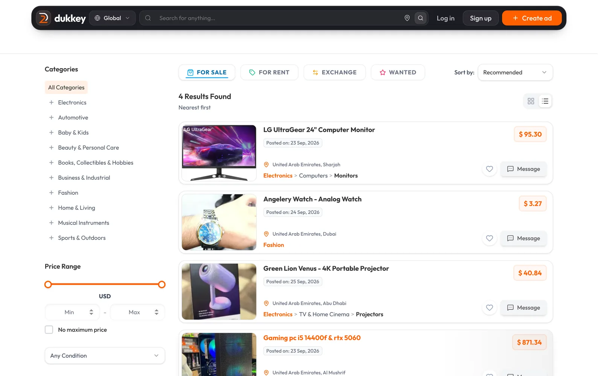
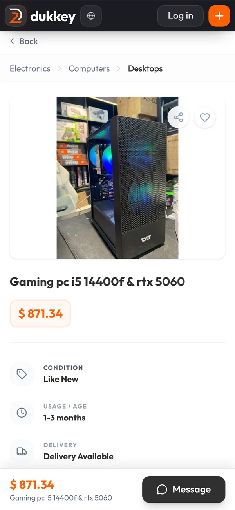

Security · identity
Five layers guard every account
Rate limits per IP and per accountLockout after failed loginsTwo-factor, with capped attemptsRefresh tokens rotate on every useSeparate staff login, 2FA required
Systems architect. I design platforms that hold up, and I ship them with an AI engineering team I direct.
A local marketplace for secondhand goods, with a full platform underneath. The code is private, so the architecture is shown below.


Even deleting a photo.
Eight steps for every change. The cheapest capable model does each task, and a model from another vendor reviews it.
Scope, risk tier, limits.
Promises become numbered rules.
A lead model routes the work.
Helper agents implement.
Every rule gets a named test.
A rival model tries to break it.
Seeded bugs prove the tests work.
CI checks everything, then deploys.
I own the judgment: rules, risk tiers, quality targets and decisions. The AI does the labor, and all of it can be audited.
It's the same job as leading people: set standards, review, measure, write it down.
Decisions other people can check, condensed from my dukkey records.
| Risk | Severity | Owner | Mitigation |
|---|---|---|---|
| A regional admin sees another region's data | HIGH | Admin | Region fences are pinned by invariants and attacked in review, and every action is audit logged. |
| Identity documents are kept longer than needed | HIGH | Gov. ID | Users can delete their own data, admins can revoke verification, and the admin screens sit behind a feature flag. |
| The planned move to Citus and Rust breaks existing behavior | MED | Architecture | Over 700 invariants are written in plain language, so each one can be pinned again against the new backend before it takes traffic. |
| The AI vision provider has an outage or changes its price | MED | AI | One owned client wraps the provider so it can be swapped, and listing creation never depends on AI. |
gaming PCs kept running in a Dubai gaming café, where every crash costs a paying customer.
Stock, sales and supplier tracking for local shops.
3D visualization for architecture projects.
Schedules and publishes social posts automatically. In private use.
Each responsibility in the role, where I've already done it, and what I'd deliver first.
I'm open to Chief Technology Expert, architect and technology lead roles. I'm happy to walk you through the dukkey architecture live.